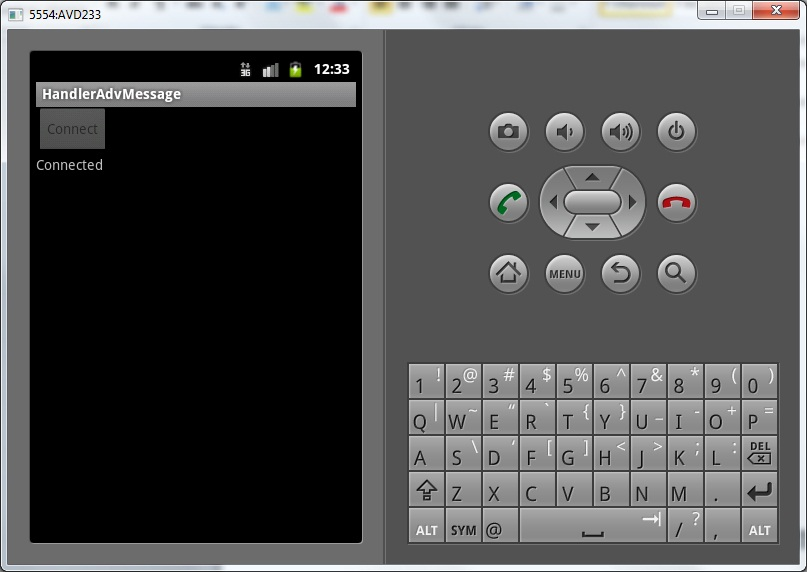
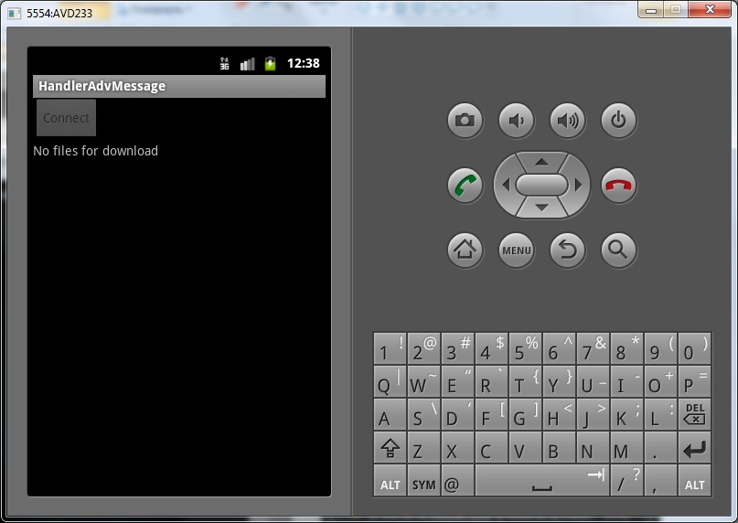

В этом уроке:
- создаем более содержательные сообщения для Handler
В прошлых уроках мы использовали метод sendEmptyMessage. Этот метод сам создавал сообщение Message, заполнял его атрибут what и отправлял в очередь. Кроме what у сообщения есть еще атрибуты arg1 и arg2 типа int, и obj типа Object. В этом уроке мы сами будем создавать сообщение, заполнять атрибуты и отправлять.
Создадим приложение, которое будет подключаться к серверу, запрашивать кол-во файлов готовых для загрузки, эмулировать загрузку и отображать на экране ход действий, используя горизонтальный ProgressBar и TextView.
Создадим проект:
Project name: P0821_HandlerAdvMessage
Build Target: Android 4.0
Application name: HandlerAdvMessage
Package name: ru.startandroid.develop.p0821handleradvmessage
Create Activity: MainActivity
strings.xml:
<?xml version="1.0" encoding="utf-8"?>
<resources>
<string name="app_name">HandlerAdvMessage</string>
<string name="connect">Connect</string>
</resources>main.xml:
<?xml version="1.0" encoding="utf-8"?>
<LinearLayout
xmlns:android="http://schemas.android.com/apk/res/android"
android:layout_width="fill_parent"
android:layout_height="fill_parent"
android:orientation="vertical">
<Button
android:id="@+id/btnConnect"
android:layout_width="wrap_content"
android:layout_height="wrap_content"
android:onClick="onclick"
android:text="@string/connect">
</Button>
<TextView
android:id="@+id/tvStatus"
android:layout_width="wrap_content"
android:layout_height="wrap_content"
android:text="">
</TextView>
<ProgressBar
android:id="@+id/pbDownload"
style="?android:attr/progressBarStyleHorizontal"
android:layout_width="match_parent"
android:layout_height="wrap_content"
android:visibility="gone">
</ProgressBar>
</LinearLayout>
MainActivity.java:
package ru.startandroid.develop.p0821handleradvmessage;
import java.util.Random;
import java.util.concurrent.TimeUnit;
import android.app.Activity;
import android.os.Bundle;
import android.os.Handler;
import android.os.Message;
import android.view.View;
import android.widget.Button;
import android.widget.ProgressBar;
import android.widget.TextView;
public class MainActivity extends Activity {
final String LOG_TAG = "myLogs";
final int STATUS_NONE = 0; // нет подключения
final int STATUS_CONNECTING = 1; // подключаемся
final int STATUS_CONNECTED = 2; // подключено
final int STATUS_DOWNLOAD_START = 3; // загрузка началась
final int STATUS_DOWNLOAD_FILE = 4; // файл загружен
final int STATUS_DOWNLOAD_END = 5; // загрузка закончена
final int STATUS_DOWNLOAD_NONE = 6; // нет файлов для загрузки
Handler h;
TextView tvStatus;
ProgressBar pbDownload;
Button btnConnect;
/** Called when the activity is first created. */
public void onCreate(Bundle savedInstanceState) {
super.onCreate(savedInstanceState);
setContentView(R.layout.main);
tvStatus = (TextView) findViewById(R.id.tvStatus);
pbDownload = (ProgressBar) findViewById(R.id.pbDownload);
btnConnect = (Button) findViewById(R.id.btnConnect);
h = new Handler() {
public void handleMessage(android.os.Message msg) {
switch (msg.what) {
case STATUS_NONE:
btnConnect.setEnabled(true);
tvStatus.setText("Not connected");
pbDownload.setVisibility(View.GONE);
break;
case STATUS_CONNECTING:
btnConnect.setEnabled(false);
tvStatus.setText("Connecting");
break;
case STATUS_CONNECTED:
tvStatus.setText("Connected");
break;
case STATUS_DOWNLOAD_START:
tvStatus.setText("Start download " + msg.arg1 + " files");
pbDownload.setMax(msg.arg1);
pbDownload.setProgress(0);
pbDownload.setVisibility(View.VISIBLE);
break;
case STATUS_DOWNLOAD_FILE:
tvStatus.setText("Downloading. Left " + msg.arg2 + " files");
pbDownload.setProgress(msg.arg1);
saveFile((byte[]) msg.obj);
break;
case STATUS_DOWNLOAD_END:
tvStatus.setText("Download complete!");
break;
case STATUS_DOWNLOAD_NONE:
tvStatus.setText("No files for download");
break;
}
};
};
h.sendEmptyMessage(STATUS_NONE);
}
public void onclick(View v) {
Thread t = new Thread(new Runnable() {
Message msg;
byte[] file;
Random rand = new Random();
public void run() {
try {
// устанавливаем подключение
h.sendEmptyMessage(STATUS_CONNECTING);
TimeUnit.SECONDS.sleep(1);
// подключение установлено
h.sendEmptyMessage(STATUS_CONNECTED);
// определяем кол-во файлов
TimeUnit.SECONDS.sleep(1);
int filesCount = rand.nextInt(5);
if (filesCount == 0) {
// сообщаем, что файлов для загрузки нет
h.sendEmptyMessage(STATUS_DOWNLOAD_NONE);
// и отключаемся
TimeUnit.MILLISECONDS.sleep(1500);
h.sendEmptyMessage(STATUS_NONE);
return;
}
// загрузка начинается
// создаем сообщение, с информацией о количестве файлов
msg = h.obtainMessage(STATUS_DOWNLOAD_START, filesCount, 0);
// отправляем
h.sendMessage(msg);
for (int i = 1; i <= filesCount; i++) {
// загружается файл
file = downloadFile();
// создаем сообщение с информацией о порядковом номере
// файла,
// кол-вом оставшихся и самим файлом
msg = h.obtainMessage(STATUS_DOWNLOAD_FILE, i,
filesCount - i, file);
// отправляем
h.sendMessage(msg);
}
// загрузка завершена
h.sendEmptyMessage(STATUS_DOWNLOAD_END);
// отключаемся
TimeUnit.MILLISECONDS.sleep(1500);
h.sendEmptyMessage(STATUS_NONE);
} catch (InterruptedException e) {
e.printStackTrace();
}
}
});
t.start();
}
byte[] downloadFile() throws InterruptedException {
TimeUnit.SECONDS.sleep(2);
return new byte[1024];
}
void saveFile(byte[] file) {
}
}В onCreate мы создаем Handler и в его методе обработки (handleMessage) прописываем всю логику изменения экрана в зависимости от приходящих сообщений. Не буду подробно это расписывать, там все просто – меняем текст, включаем/выключаем кнопку, показываем/скрываем ProgressBar, меняем значение ProgressBar. Из интересного здесь стоит отметить, что читаем мы на этот раз не только what, но и остальные атрибуты сообщения – arg1, arg2, obj. А как они заполняются, увидим далее.
В onclick создаем новый поток для загрузки файлов. Устанавливаем подключение, получаем кол-во готовых для загрузки файлов. Если файлов для загрузки нет, посылаем соответствующее сообщение в Handler и отключаемся. Если же файлы есть, мы создаем сообщение Message с помощью метода obtainMessage (int what, int arg1, int arg2). Он принимает на вход атрибуты what, arg1 и arg2. В what мы кладем статус, в arg1 - кол-во файлов, arg2 – не нужен, там просто ноль.
Далее начинаем загрузку. После загрузки каждого файла мы создаем сообщение Message c помощью метода obtainMessage (int what, int arg1, int arg2, Object obj), заполняем его атрибуты: what – статус, arg1 – порядковый номер файла, arg2 – кол-во оставшихся файлов, obj – файл. И отправляем.
По завершению загрузки отправляем соответствующее сообщение и отключаемся.
downloadFile – эмулирует загрузку файла. ждет две секунды и возвращает массив из 1024 байтов.
saveFile – метод сохранения файла на диск. Просто заглушка. Ничего не делает.
Все сохраняем и запускаем. Жмем Connect.
Устанавливается подключение

Далее, либо начинается загрузка

либо появляется сообщение, что файлов нет

Отключаемся

Используя разные атрибуты кроме what, мы смогли передать в основной поток и использовать там более разнообразные данные.
Мы создаем сообщения с помощью разных реализаций метода obtainMessage. А почему бы не создавать напрямую объект Message с помощью его конструкторов? В принципе можно, но официальная документация рекомендует пользоваться методами obtainMessage, потому что это эффективней и быстрее. В этом случае сообщение достается из глобального пула сообщений, а не создается с нуля.
Здесь вы можете посмотреть все реализации метода obtainMessage для формирования сообщений и использовать тот, который подходит для ситуации. Они различаются разными комбинациями входных параметров.